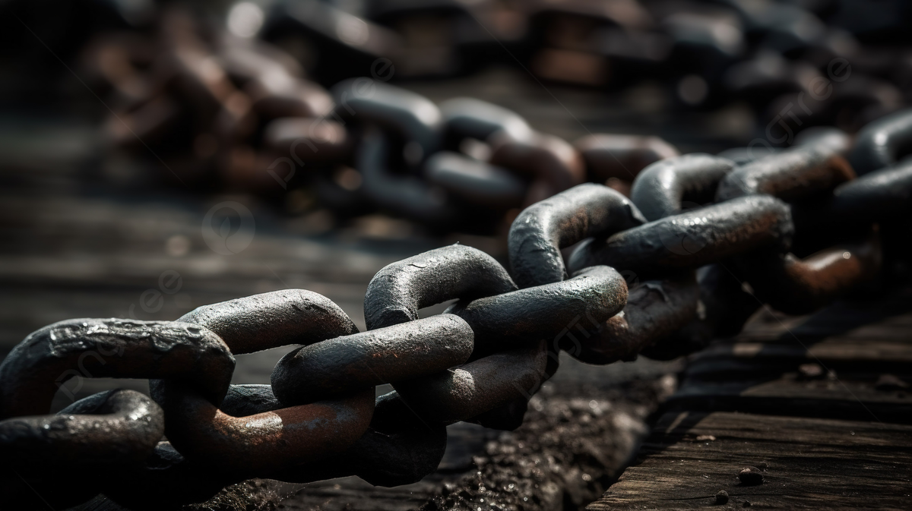
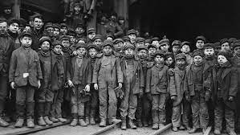

Human Trafficking in the Modern World
Human Trafficking remains a prevalent and disturbing issue even in contemporary times. Millions across the globe are victims of what is known as “modern day slavery.” There are a wide variety of different types of trafficking including sex trafficking, forced labor, and domestic servitude. Each of these types include specific methods that are used to meet the ends of trafficking a person.
Sex trafficking is a significant concern, with many victims being involved in the world’s commercial sex industry. This industry violates the dignity of the human person by usually forcing them to engage in sexual acts with many of them being non-consensual. The methods of sex trafficking used today are brothels, escorts, and online platforms. Online trafficking, specifically, is an extremely common method that many fall victim to. A very common situation is: A victim is in an online chat room and is enticed into discussion through a private message by a trafficker. The conversation usually seems innocent at the start as the victim believes the person they are conversing with is like them, someone looking for friends. As the chat continues the trafficker usually may ask for explicit photos of the victim, or goes as far as to ask the victim to meet up in real life. Many people who are lonely fall victim to this as they are ill-informed on trafficking and truly just believe they are making an online friend. With easy access to the internet today by billions of people, anyone could fall victim to this, or even become a trafficker themselves as they have the tools predisposed to fulfill their evil acts. Traffickers are also becoming extremely smart at hiding their identities online, as well as being psychologically and physically abusive towards their victims. The internet is surely an extremely dangerous place and a tool that makes trafficking anonymous and even convenient for an evil person.
Forced labor and domestic servitude are very similar as they are forcefully, or deceptively compelling someone to work. Domestic servitude, in specific, involves a victim to perform work at a private residence where their access to food, shelter, and transportation will be controlled and usually limited. Immigrants are very susceptible to domestic servitude as the issues of lack of familiarity with anyone in the nation, as well as the language barrier, allow them to be easily abused. The reason domestic servitude goes very under the radar with officials and labor agencies is due to the fact that it takes place in a private residence that cannot be impeded on without a warrant. Forced labor is very common and can range from many different things. Some of the most common methods used to carry out forced labor are debt bondage, unlawful recruitment, and child labor. People are kept in debt by traffickers by having them pay extreme interest rates, or traffickers tell victims they have inherited a “debt” that they have received from their relatives that is basically unpayable. Child labor is unfortunately common, especially among children who are vulnerable and are usually out of custody of a family member. Children are kept to work, sold into work, or put into debt bondage by traffickers so that they can reap their free labor.
In our modern world both sex trafficking and labor related trafficking start on the internet. The internet puts two unknown people together and disregards all physical aspects. Traffickers use this to become “nice-seeming” people. The modern world that relies on the internet must also remember that it’s one of the most dangerous weapons as well. Modern-day slavery exists and it’s not going anytime soon. Organizations and the government keep hard at work to prevent both online and offline trafficking, but as long as evil individuals exist, the dignity of humans will never be respected as it should.